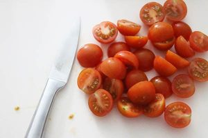
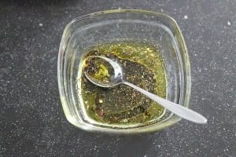

Pas het aantal personen aan; de hoeveelheden hieronder worden automatisch herberekend.
Ingrediënten
- 200 gr sla
- 500 gr cherrytomaatjes
- 4 eetlepels pijnboompitten (geroosterd)
- 2 zakjes mozzarella balletjes
- 8 plakken parmaham
Voor de dressing
- 2 eetlepel balsamico azijn
- Scheutje olijfolie
- 2 theelepel Italiaanse kruiden
- 2 eetlepel citroensap
- Peper en zout
Bereiding
Meng de ingrediënten voor de dressing door elkaar. Snijd de tomaatjes in tweeën. Meng de sla met de Italiaanse dressing, tomaatjes en mozzarella balletjes.



Scheur de parmaham in stukken en verdeel over de Italiaanse salade samen met de pijnboompitten.
Tip: voeg wat pasta toe aan de salade voor een maaltijdsalade.